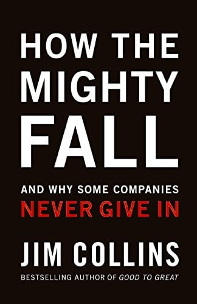
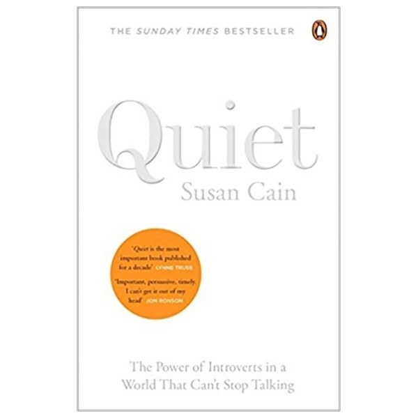
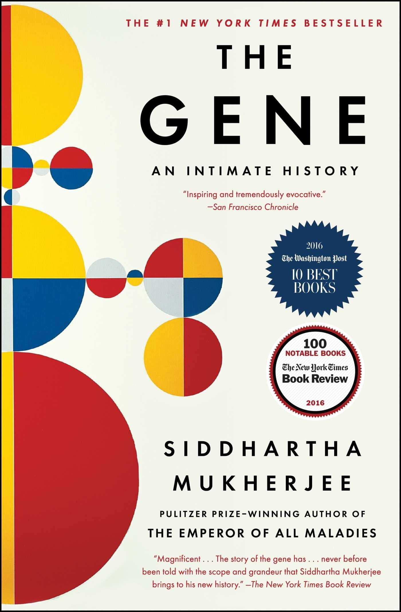
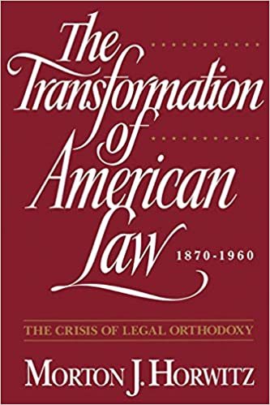
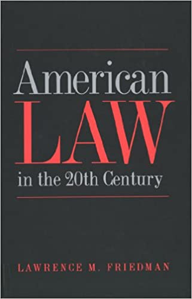
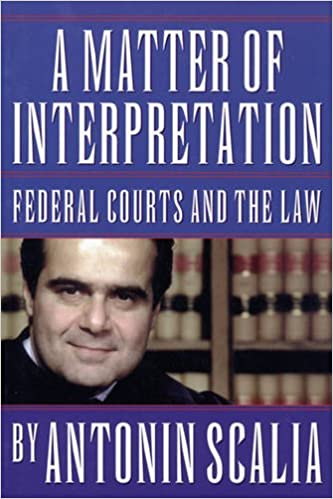
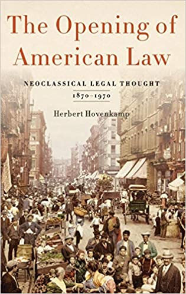
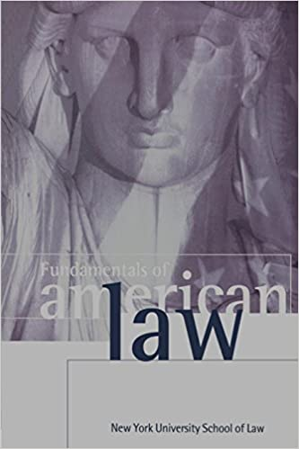

Decline can be avoided. Decline can be detected. Decline can be reversed. Amidst the desolate landscape of fallen great companies, Jim Collins began to wonder: How do the mighty fall? Can decline be detected early and avoided? How far can a company fall before the path toward doom becomes inevitable and unshakable? How can companies reverse course?
In How the Mighty Fall, Collins confronts these questions, offering leaders the well-founded hope that they can learn how to stave off decline and, if they find themselves falling, reverse their course. Collins' research project—more than four years in duration—uncovered five step-wise stages of decline:
Stage 1: Hubris Born of Success
Stage 2: Undisciplined Pursuit of More
Stage 3: Denial of Risk and Peril

"Quiet" by Susan Cain will change how you think about introverts forever. A "Sunday Times" and "New York Times" Bestseller. Our lives are driven by a fact that most of us can't name and don't understand. It defines who our friends and lovers are, which careers we choose, and whether we blush when we're embarrassed. That fact is whether we're an introvert or an extrovert. The introvert/extrovert divide is the most fundamental dimension of personality. And at least a third of us are on the introverted side. Some of the world's most talented people are introverts. Without them we wouldn't have the Apple computer, the theory of relativity and Van Gogh's sunflowers. Yet extroverts have taken over. Shyness, sensitivity and seriousness are often seen as being negative. Introverts feel reproached for being the way they are. In "Quiet", Susan Cain shows how the brain chemistry of introverts and extroverts differs, and how society misunderstands and undervalues introverts. She gives introverts the tools to better understand themselves and take full advantage of their strengths. Passionately argued, superbly researched, and filled with real stories, "Quiet" will permanently change how we see introverts - and how you see yourself. "I can't get Quiet out of my head. It is an important book - so persuasive and timely and heartfelt it should inevitably effect change in schools and offices". (Jon Ronson, "The Guardian"). "Susan Cain's "Quiet" has sparked a quiet revolution. In our booming culture, hers is a still, small voice that punches above its weight. Perhaps rather than sitting back and asking people to speak up, managers and company leaders might lean forward and listen". (Megan Walsh, "The Times"). "Quiet is a very timely book, and Cain's central thesis is fresh and important. Maybe the extrovert ideal is no longer as powerful as it was; perhaps it is time we all stopped to listen to the still, small voice of calm". (Daisy Goodwin, "The Sunday Times"). Susan Cain is the owner of The Negotiation Company, a firm that trains people in negotiation and communication skills. Her clients include Merrill Lynch, Standard and Poor, University of Chicago Business School and many of the US' most powerful law firms. She previously practiced corporate law for seven years with Cleary Gottlieb Steen and Hamilton. She lives in New York with her husband and two sons.

“Dr. Siddhartha Mukherjee dazzled readers with his Pulitzer Prize-winning The Emperor of All Maladies in 2010. That achievement was evidently just a warm-up for his virtuoso performance in The Gene: An Intimate History, in which he braids science, history, and memoir into an epic with all the range and biblical thunder of Paradise Lost” (The New York Times). In this biography Mukherjee brings to life the quest to understand human heredity and its surprising influence on our lives, personalities, identities, fates, and choices.
“Mukherjee expresses abstract intellectual ideas through emotional stories…[and] swaddles his medical rigor with rhapsodic tenderness, surprising vulnerability, and occasional flashes of pure poetry” (The Washington Post). Throughout, the story of Mukherjee’s own family—with its tragic and bewildering history of mental illness—reminds us of the questions that hang over our ability to translate the science of genetics from the laboratory to the real world. In riveting and dramatic prose, he describes the centuries of research and experimentation—from Aristotle and Pythagoras to Mendel and Darwin, from Boveri and Morgan to Crick, Watson and Franklin, all the way through the revolutionary twenty-first century innovators who mapped the human genome.
“A fascinating and often sobering history of how humans came to understand the roles of genes in making us who we are—and what our manipulation of those genes might mean for our future” (Milwaukee Journal-Sentinel), The Gene is the revelatory and magisterial history of a scientific idea coming to life, the most crucial science of our time, intimately explained by a master. “The Gene is a book we all should read” (USA TODAY).
Siddhartha Mukherjee is the author of The Emperor of All Maladies: A Biography of Cancer, winner of the 2011 Pulitzer Prize in general nonfiction, and The Laws of Medicine. He is the editor of Best Science Writing 2013. Mukherjee is an assistant professor of medicine at Columbia University and a cancer physician and researcher. A Rhodes scholar, he graduated from Stanford University, University of Oxford, and Harvard Medical School. He has published articles in Nature, The New England Journal of Medicine, The New York Times, and Cell. He lives in New York with his wife and daughters. Visit his website at: SiddharthaMukherjee.com
The Hero Of Ages: A Mistborn Novel
From #1 New York Times bestselling author Brandon Sanderson, the Mistborn series is a heist story of political intrigue and magical, martial-arts action.
Who is the Hero of Ages? To end the Final Empire and restore freedom, Vin killed the Lord Ruler. But as a result, the Deepness--the lethal form of the ubiquitous mists--is back, along with increasingly heavy ashfalls and ever more powerful earthquakes. Humanity appears to be doomed.
Having escaped death at the climax of The Well of Ascension only by becoming a Mistborn himself, Emperor Elend Venture hopes to find clues left behind by the Lord Ruler that will allow him to save the world. Vin is consumed with guilt at having been tricked into releasing the mystic force known as Ruin from the Well. Ruin wants to end the world, and its near omniscience and ability to warp reality make stopping it seem impossible. She can't even discuss it with Elend lest Ruin learn their plans!
Alice is stifled, bored, and misunderstood.
So when she meets wealthy and handsome American, Bennett Van Cleve, she is quickly swept off her feet.
Marrying him and moving to America seems like a great adventure - but life as a newlywed in stuffy Baileyville, Kentucky, is not at all what she hoped for.
Until, that is, she responds to a call for volunteers to start a travelling library, surprising herself by saying yes, before her husband can say no . . .Led by feisty and rebellious Margery O'Hare, this unlikely group of women travel far and wide on their mission to bring books and reading to those that need it, and Alice finally finds the freedom, friendship and love that she's been looking for.
But not everyone approves of what they are doing, especially her new father-in-law. And when the town turns against them, will their belief in each other and their work be enough?

When the first volume of Morton Horwitz's monumental history of American law appeared in 1977, it was universally acclaimed as one of the most significant works ever published in American legal history. The New Republic called it an "extremely valuable book." Library Journal praised it as "brilliant" and "convincing." And Eric Foner, in The New York Review of Books, wrote that "the issues it raises are indispensable for understanding nineteenth-century America." It won the coveted Bancroft Prize in American History and has since become the standard source on American law for the period between 1780 and 1860. Now, Horwitz presents The Transformation of American Law, 1870 to 1960, the long-awaited sequel that brings his sweeping history to completion.
In his pathbreaking first volume, Horwitz showed how economic conflicts helped transform law in antebellum America. Here, Horwitz picks up where he left off, tracing the struggle in American law between the entrenched legal orthodoxy and the Progressive movement, which arose in response to ever-increasing social and economic inequality. Horwitz introduces us to the people and events that fueled this contest between the Old Order and the New. We sit in on Lochner v. New York in 1905--where the new thinkers sought to undermine orthodox claims for the autonomy of law--and watch as Progressive thought first crystallized. We meet Oliver Wendell Holmes, Jr. and recognize the influence of his incisive ideas on the transformation of law in America. We witness the culmination of the Progressive challenge to orthodoxy with the emergence of Legal Realism in the 1920s and '30s, a movement closely allied with other intellectual trends of the day. And as postwar events unfold--the rise of totalitarianism abroad, the McCarthyism rampant in our own country, the astonishingly hostile academic reaction to Brown v. Board of Education--we come to understand that, rather than self-destructing as some historians have asserted, the Progressive movement was alive and well and forming the roots of the legal debates that still confront us today.
The Progressive legacy that this volume brings to life is an enduring one, one which continues to speak to us eloquently across nearly a century of American life. In telling its story, Horwitz strikes a balance between a traditional interpretation of history on the one hand, and an approach informed by the latest historical theory on the other. Indeed, Horwitz's rich view of American history--as seen from a variety of perspectives--is undertaken in the same spirit as the Progressive attacks on an orthodoxy that believed law an objective, neutral entity.
The Transformation of American Law is a book certain to revise past thinking on the origins and evolution of law in our country. For anyone hoping to understand the structure of American law--or of America itself--this volume is indispensable.

In this long-awaited successor to his landmark work A History of American Law, Lawrence M. Friedman offers a monumental history of American law in the twentieth century.
The first general history of its kind, American Law in the Twentieth Century describes the explosion of law over the past century into almost every aspect of American life. Since 1900 the center of legal gravity in the United States has shifted from the state to the federal government, with the creation of agencies and programs ranging from Social Security to the Securities Exchange Commission to the Food and Drug Administration. Major demographic changes have spurred legal developments in such areas as family law and immigration law. Dramatic advances in technology have placed new demands on the legal system in fields ranging from automobile regulation to intellectual property.
Throughout the book, Friedman focuses on the social context of American law. He explores the extent to which transformations in the legal order have resulted from the social upheavals of the twentieth century--including two world wars, the Great Depression, the civil rights movement, and the sexual revolution. Friedman also discusses the international context of American law: what has the American legal system drawn from other countries? And in an age of global dominance, what impact has the American legal system had abroad?
Written by one of our most eminent legal historians, this engrossing book chronicles a century of revolutionary change within a legal system that has come to affect us all.

We are all familiar with the image of the immensely clever judge who discerns the best rule of common law for the case at hand. According to U.S. Supreme Court Justice Antonin Scalia, a judge like this can maneuver through earlier cases to achieve the desired aim--"distinguishing one prior case on his left, straight-arming another one on his right, high-stepping away from another precedent about to tackle him from the rear, until (bravo!) he reaches the goal--good law." But is this common-law mindset, which is appropriate in its place, suitable also in statutory and constitutional interpretation? In a witty and trenchant essay, Justice Scalia answers this question with a resounding negative.
In exploring the neglected art of statutory interpretation, Scalia urges that judges resist the temptation to use legislative intention and legislative history. In his view, it is incompatible with democratic government to allow the meaning of a statute to be determined by what the judges think the lawgivers meant rather than by what the legislature actually promulgated. Eschewing the judicial lawmaking that is the essence of common law, judges should interpret statutes and regulations by focusing on the text itself. Scalia then extends this principle to constitutional law. He proposes that we abandon the notion of an everchanging Constitution and pay attention to the Constitution's original meaning. Although not subscribing to the "strict constructionism" that would prevent applying the Constitution to modern circumstances, Scalia emphatically rejects the idea that judges can properly "smuggle" in new rights or deny old rights by using the Due Process Clause, for instance. In fact, such judicial discretion might lead to the destruction of the Bill of Rights if a majority of the judges ever wished to reach that most undesirable of goals.
This essay is followed by four commentaries by Professors Gordon Wood, Laurence Tribe, Mary Ann Glendon, and Ronald Dworkin, who engage Justice Scalia's ideas about judicial interpretation from varying standpoints. In the spirit of debate, Justice Scalia responds to these critics.

Two Victorian Era intellectual movements changed the course of American legal thought: Darwinian natural selection and marginalist economics. The two movements rested on fundamentally inconsistent premises. Darwinism emphasized instinct, random selection, and determinism; marginalism emphasized rational choice. American legal theory managed to accommodate both, although to different degrees in different disciplines. The two movements also developed mutually exclusive scientific methodologies. Darwinism emphasizing external indicators of welfare such as productivity, education or health, while marginalists emphasized market choice. Historians have generally exaggerated the role of Darwinism in American legal thought, while understating the role of marginalist economics. This book explores these issues in several legal disciplines and time periods, including Progressive Era redistributive policies, American common law, public law, and laws regarding corporations and competition. One is Progressive Era movements for redistributive policies about taxation and public goods. Darwinian science also dominated the law of race relations, while criminal law reflected an inconsistent mixture of Darwinian and marginalist incentive-based theories. The common law, including family law, contract, property, and tort, moved from emphasis on correction of past harms to management of ongoing risk and relationship. A chapter on Legal Realism emphasizes the Realists' indebtedness to institutional economics, a movement that powerfully influenced American legal theory long after it fell out of favor with economists. Five chapters on the corporation, innovation and competition policy show how marginalist economics transformed business policy. The ironic exception was patent law, which developed in relative insulation from economic concerns about innovation policy. The book concludes with three chapters on public law, emphasizing the role of institutionalist economics in policy making during and after the New Deal. A lengthy epilogue then explores the variety of postwar attempts to reconstruct a defensible and more market-oriented rule of law after the decline of Legal Realism and the New Deal.

The American legal system is the most significant in the world today, yet until recently there had not been a book that provided both the basic rules and the theoretical understanding necessary to comprehend it. Now, Fundamentals of American Law supplies these concepts to a number of audiences, ranging from students and scholars of law to business people and government officials; from those whose work regularly involves legal issues and who want to understand the law better than they do now, to the general reader who wants to gain a stronger appreciation of our legal system.
In twenty-three chapters, the book looks at the overarching principles of American law, the seven subject areas primarily governed by the States, and the eight areas governed by Federal Law. Each chapter is written by an acknowledged expert in that area. All of the authors are on the faculty of the New York University School of Law, regarded as one of the elite law schools in America, and this work is offered as an element of its unique Global Law School Program.
The book not only provides the reader with a solid foundation of American law, but will also serve as a basic reference book for years to come. Fundamentals of American Law is one volume anyone will want to have on hand to gain an understanding of our legal system.